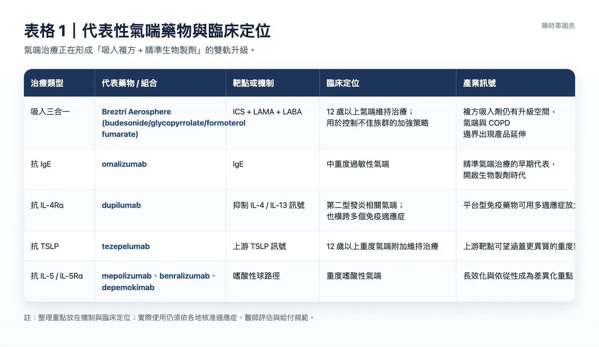
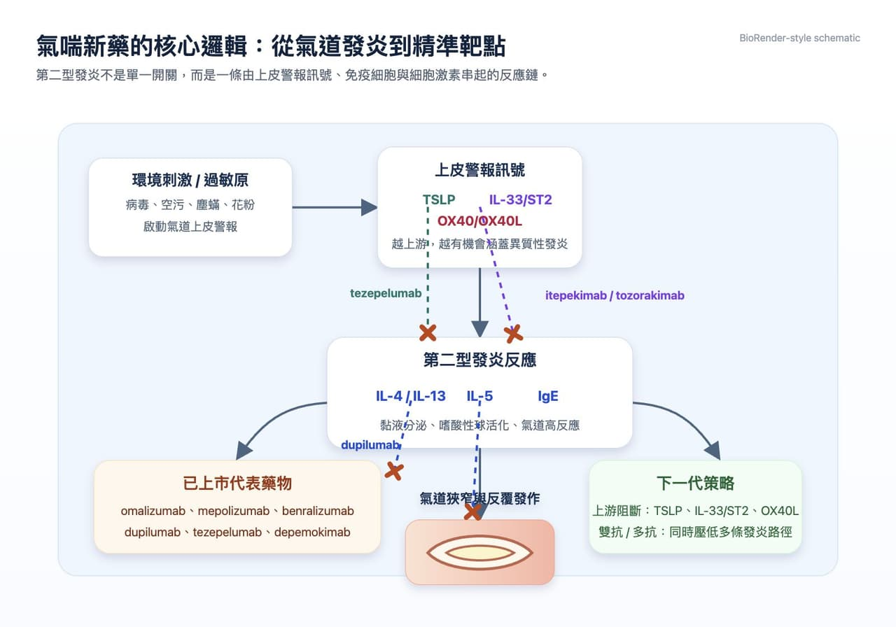
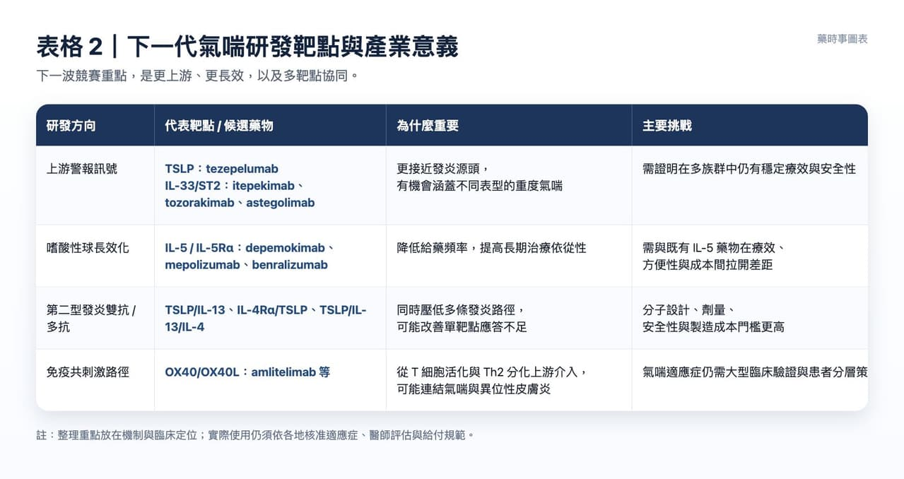
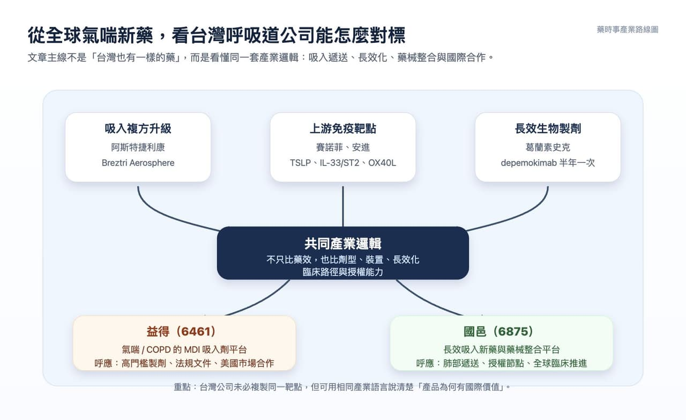

氣喘是全球最常見的慢性呼吸道疾病之一，也是醫學上仍難以「根治」的疾病。WHO 估計，2019 年全球約有 2.62 億名氣喘患者，並造成約 45.5 萬人死亡；若採用較早期的全球估算，患者人數甚至可達 3.39 億。這不只是過敏體質或空氣品質的生活議題，也是一條正在被國際大藥廠重新定義的創新藥賽道。
分享這篇分析
把這篇文章轉給關注生技醫藥、公司研究或資本市場的朋友。
過去氣喘治療的核心，是長期控制氣道發炎、避免急性發作。吸入型類固醇 ICS、長效 β2 受體促效劑 LABA、長效抗膽鹼藥 LAMA，構成臨床上最熟悉的基礎工具；但在真實世界中，即使使用 ICS/LABA 二合一治療，仍有相當比例患者控制不佳，肺功能下降、夜間症狀、急診與口服類固醇需求都會反覆出現。
這也是為什麼近年氣喘治療的重點，正在從「症狀控制」往兩個方向推進：一邊是吸入劑型的升級，讓三種機制濃縮在單一吸入器；另一邊則是生物製劑與雙抗、多抗，直接切入第二型發炎與上游免疫訊號。

吸入治療仍是地基，但三合一正在往前線移動
氣喘藥物大致可分成三類：控制型藥物、緩解型藥物，以及針對特定免疫路徑的生物製劑。控制型藥物的任務，是長期降低氣道發炎與發作風險；緩解型藥物則主要用於急性症狀；而生物製劑通常用在中重度、重度或特定表型患者。
吸入治療的基本邏輯並不複雜：
▸ ICS：降低氣道發炎，是長期控制的基礎。
▸ LABA：放鬆支氣管平滑肌，改善氣流受限。
▸ LAMA：抑制膽鹼路徑造成的支氣管收縮，常用於控制不佳族群的加強治療。
2026 年 4 月，阿斯特捷利康（AstraZeneca）的 Breztri Aerosphere（budesonide/glycopyrrolate/formoterol fumarate, BGF 320/36/9.6 µg）獲 FDA 核准，用於 12 歲以上氣喘患者的維持治療，成為美國首個也是目前唯一一個單一吸入器三合一氣喘維持治療方案。
這項核准來自 KALOS 與 LOGOS 第三期臨床試驗：相較於 ICS/LABA 二合一吸入治療，Breztri 在肺功能改善上達到統計顯著且具臨床意義的效果，並在首次給藥後短時間內看到肺功能改善。
這件事的訊號很明確：對仍控制不佳的患者來說，三合一治療不再只是 COPD 領域熟悉的概念，也正被帶進氣喘治療演算法。它不會取代救急吸入劑，但可能讓一部分患者在維持治療上更早獲得更完整的機制覆蓋。
表格 1：代表性氣喘藥物與臨床定位
生物製劑讓氣喘進入精準治療時代
如果說吸入三合一代表劑型與複方策略的升級，生物製劑則代表疾病理解的升級。氣喘並不是單一疾病，而是一群由不同發炎路徑構成的臨床表現，其中第二型發炎是最重要的主線之一。IL-4、IL-5、IL-13、IgE，以及更上游的 TSLP，都是目前被驗證或高度關注的靶點。
2003 年，諾華（Novartis）／羅氏（Roche）的 omalizumab 獲 FDA 核准用於中重度過敏性氣喘，開啟抗 IgE 精準治療時代。之後，IL-5、IL-5Rα、IL-4Rα、TSLP 等靶點陸續成熟，讓醫師能依照嗜酸性球、過敏表型、發作頻率與共病狀況，選擇更貼近病理機制的療法。賽諾菲（Sanofi）／Regeneron 的 dupilumab 透過結合 IL-4Rα，抑制 IL-4 與 IL-13 訊號，已被用於 6 歲以上特定氣喘患者的維持治療。
這個藥物之所以重要，不只在於氣喘，也在於它橫跨異位性皮膚炎、慢性鼻竇炎合併鼻息肉等第二型發炎疾病，證明「同一條免疫路徑可串起多個適應症」的商業與醫學價值。
阿斯特捷利康／安進（Amgen）的 tezepelumab 則更往上游走。它鎖定 TSLP，這是一個由上皮細胞釋放、位於發炎級聯較早期的訊號。
FDA 已核准 tezepelumab 用於 12 歲以上重度氣喘患者的附加維持治療。由於 TSLP 位於多條發炎路徑的前端，這類藥物的關鍵賣點，是不只侷限於單一嗜酸性球表型，而是嘗試涵蓋更異質的重度氣喘族群。IL-5 軸則更聚焦於嗜酸性球。mepolizumab、benralizumab、depemokimab 都與重度嗜酸性氣喘密切相關。阿斯特捷利康的 benralizumab 是 IL-5Rα 單抗，已用於重度嗜酸性氣喘；葛蘭素史克（GSK）的 mepolizumab 是較早期的 IL-5 代表藥物，而 depemokimab 則是後續長效化版本。
2025 年 12 月，FDA 核准 GSK 的 depemokimab，用於 12 歲以上嗜酸性表型重度氣喘患者的附加維持治療。這使得「半年一次」的超長效 IL-5 生物製劑，正式進入美國市場。

圖解：第二型發炎與氣喘新藥靶點
下一場競賽：不是只打單一靶點，而是往上游與多靶點走
氣喘生物製劑的研發競爭，已經從「能不能阻斷單一細胞激素」進入「能不能更早、更廣、更持久地重塑發炎網路」。這也是為什麼 TSLP、IL-33/ST2、OX40/OX40L，以及雙抗、多抗，成為近年全球藥廠布局的重點。
IL-33 位於發炎級聯反應上游，與 ST2 受體結合後，可啟動第二型與非第二型發炎。理論上，IL-33/ST2 路徑可能提供比單純嗜酸性球靶點更廣的抗發炎覆蓋，對沒有明顯嗜酸性球升高、卻仍反覆發作的患者尤其具有想像空間。
全球目前尚無 IL-33/ST2 氣喘藥物正式獲批，但 Regeneron／賽諾菲的 itepekimab、阿斯特捷利康的 tozorakimab，以及安進／羅氏的 astegolimab，都曾或正在相關領域推進臨床研究。
另一條重要路徑是 OX40/OX40L。這是免疫上游共刺激訊號，會影響 T 細胞活化與 Th2 分化，進而帶動 IL-4、IL-13 等下游發炎反應。
賽諾菲的 amlitelimab 是目前進展相當受到關注的 OX40L 單抗之一，除了異位性皮膚炎，也正在氣喘領域推進後期研究。
更積極的策略，是把兩條或三條路徑放進同一個分子裡。
輝瑞（Pfizer）的 tilrakimig（TSLP/IL-13/IL-4 三抗）、賽諾菲的 lunsekimig（TSLP/IL-13 雙抗），以及其他 TSLP/IL-4Rα、TSLP/IL-13、OX40L/TSLP 等雙抗設計，都在回答同一個問題：如果氣喘本來就是多路徑疾病，單一靶點是否足夠？
這類策略不一定保證成功。多靶點藥物必須同時證明療效、安全性、劑量設計與製造可行性，也要避免免疫抑制過度。但它們確實代表氣喘研發的下一個方向：從「找到一個發炎按鈕」轉向「重新設計整個發炎迴路」。

表格 2：下一代氣喘研發靶點與產業意義
市場為什麼願意押注氣喘？
氣喘市場之所以吸引大藥廠，不只是因為患者多，而是因為未滿足需求仍高。許多患者雖然已有吸入治療，仍反覆急性惡化；重度氣喘患者更可能長期使用口服類固醇，面臨感染、骨質疏鬆、代謝異常等副作用風險。只要能減少急性發作、降低類固醇依賴、改善肺功能與生活品質，就有機會在臨床與給付端建立價值。
Frost & Sullivan 曾估計，全球氣喘藥物市場將從 2022 年約 272 億美元，成長至 2030 年約 528 億美元，年複合成長率約 8.6%；其中生物藥占比有望持續提高。雖然這類預測需要隨市場競爭、專利到期、給付政策與臨床結果動態修正，但方向並不難理解：氣喘治療正在從便宜、普及的吸入藥，延伸到高單價、高精準度的免疫藥物。
從商業角度看，dupilumab 已經證明第二型發炎平台型藥物的天花板可以非常高；tezepelumab 則證明上游靶點能在重度氣喘建立差異化；depemokimab 代表長效化能改善依從性；Breztri 則顯示吸入複方仍有創新空間。這些案例合在一起，讓氣喘不再只是傳統呼吸科用藥市場，而是免疫學、給藥技術、慢病管理與全球臨床開發交會的戰場。
產業圖：全球氣喘新藥邏輯如何對應台灣公司

台灣可以看什麼？
台灣目前沒有直接站在全球氣喘生物製劑第一線的公司，但這條賽道仍然很適合拿來看台灣藥廠的兩種能力：吸入劑型、長效遞送，以及能不能把產品故事講成國際市場聽得懂的臨床與商業敘事。
◆ 先看「氣喘本身」：吸入劑型能不能國際化？
🔹 益得（6461）｜從氣喘吸入劑，看高門檻劑型如何變成國際合作故事
益得本身就是以氣喘與 COPD 的定量噴霧吸入劑（MDI）為核心。它不是在做 TSLP 或 IL-5 生物製劑，但和本文前半段的 Breztri 邏輯有呼應：呼吸道用藥不是只有分子本身，劑型、裝置、噴霧品質、製程放大與法規文件，都是產品能不能進入國際市場的門檻。近期益得與全球前十大學名藥廠簽署合作，推動 MDI 關鍵產品搶攻美國市場，這類事件本身就很有敘事空間。對市場來說，重點不是「又一個吸入劑」。而是台灣公司能不能把高門檻製劑做成可授權、可合作、可在美國市場驗證的產品平台。
◆ 再看「肺部遞送平台」：長效化與藥械整合能不能被國際買單？
🔹 國邑（6875）｜不是氣喘公司，但很適合對照「長效吸入＋藥械整合」
國邑的主軸不是氣喘，而是長效吸入新藥與藥械整合，例如 L606、L608 等吸入式肺部疾病管線。它和本文的交集不在適應症名稱，而在產業邏輯：如何把肺部遞送、長效化、霧化器械與全球授權，包成一個可被海外夥伴接受的資產。國邑近年已有 L606 授權 Liquidia、全球第三期臨床推進、里程碑金與授權區域擴大等事件，近期又有法說會與臨床進度更新。
🧩 換句話說，氣喘新藥這條線，對台灣生技的啟發不只在「誰也做氣喘」。
更重要的是：
▸ 全球市場正在提高對吸入遞送與長效化的要求。
▸ 呼吸道用藥的壁壘越來越不只是 API，而是劑型、裝置、臨床路徑與法規能力。
▸ 台灣公司若能把這些能力轉成授權、合作、臨床節點或募資節奏，就會比單純講題材更有說服力。
結語
氣喘治療正在發生一場不太吵、但很深的轉變。吸入藥仍是基礎，三合一複方讓維持治療更完整；生物製劑則把氣喘拆解成 IgE、IL-5、IL-4/IL-13、TSLP、IL-33/ST2、OX40/OX40L 等免疫路徑。下一代產品不只比誰更有效，也比誰能找到正確患者、降低發作、減少類固醇依賴，並讓患者願意長期使用。
這也是氣喘賽道最值得注意的地方：它不是單純「慢病市場很大」的故事，而是全球大藥廠正在把呼吸科疾病，重新寫成免疫精準醫療故事。

參考資料 / 延伸閱讀
- WHO, Asthma fact sheet.
- FDA, Drug Trials Snapshot: EXDENSUR（depemokimab），2025/12/16.
- FDA, Tezspire（tezepelumab）approval information.
- AstraZeneca, Breztri Aerosphere US asthma approval announcement，2026/04/28.
- GSK, 2025 Annual Report and depemokimab severe asthma approval announcement.
- GINA, Global Strategy for Asthma Management and Prevention.
- Sanofi / Regeneron, Dupixent asthma prescribing and clinical information.
引用本文
若在簡報、報告或社群討論引用，建議附上 Drugnews 原文連結。
Drugnews 編輯部，〈氣喘新藥正在換檔：從吸入三合一到上游免疫靶點!〉，Drugnews｜藥時事，2026/05/25，https://drugnews.com.tw/articles/2026-05-25-asthma-new-drug-immune-targets.html
社群原文
讀完這篇，下一步看
這三篇會優先依主題、標籤與產業脈絡推薦，幫你把同一個問題讀得更完整。

一篇文章講通現在的“禮來”併購邏輯
💡 四個月，五筆交易，若把交易上限全部加總，Eli Lilly 在 2026 年前四個月已經丟出超過 187 億美元的併購火力：1 月的 Ventyx Biosciences、2 月的 Orna Therapeutics、3 月的 Centessa Pharmaceuticals、4 月的 Cro…

減重藥物不只看體重了：下一代療法正在瞄準這些方向
下一代減重療法不只比體重下降，也要看肌肉保留、脂肪肝、心血管與代謝共病等更完整臨床價值。

減肥藥還是太強了，禮來 猛健樂 賺爛！
2026 年第一季，Eli Lilly 交出了一份讓整個製藥業都很難忽視的成績單：單季總營收 197.99 億美元，年增 56%；調整後 EPS 達 8.55 美元，大幅優於市場預期。真正撐起這份財報的，仍然是那個已經把全球代謝藥市場打穿的名字：tirzepatide。